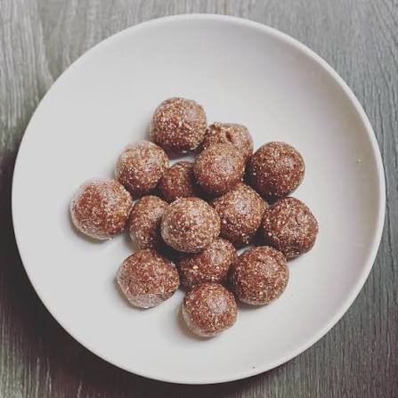

Bolitas Energéticas

Las bolitas energéticas son un snack saludable y fácil de preparar. Combinan ingredientes naturales como dátiles, avena y frutos secos para aportar energía, fibra y grasas saludables. Son ideales antes de entrenar o para combatir el hambre entre comidas.